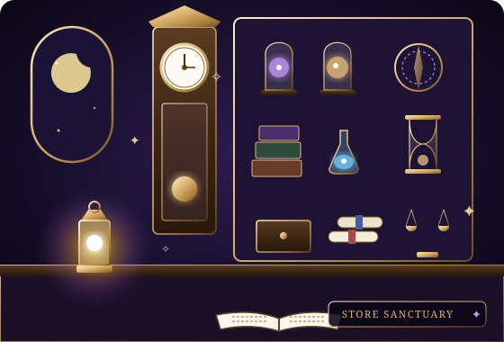

HOUR 01 ‧ 01:00
逆流雕花懷錶
代價：三日無夢的深沉睡眠
指針逆時針轉動的黃銅雕花懷錶，能讓持有者的個人意識短暫倒退數分鐘，給予重整呼吸、挽回傷人言語的珍貴契機。
✦ ORIGIN & PHILOSOPHY
因見證世人對過往遺憾的執念，在星光與鐘擺交錯處開設只收「代價」不收金錢的時光雜貨店。
✦ THE BEGINNING OF ETERNITY
漫長歲月裡，店主曾無數次凝視人們在命運的岔路口懊悔哭泣——那句被風吹散的告白、那一通未能接聽的長途電話，或是年少時因賭氣而擦肩而過的摯愛。人世間最強烈的靈魂波動，往往不是欲望或野心，而是那些永遠無法挽回的「如果當初」。
這些沉重的遺憾凝聚成強大的時空引力，最終在星光與鐘擺交錯的裂隙之中，催生了這座只在深夜開啟的「時光雜貨店」。
我們在此蒐集被時光遺落的古老道具，不為榮華富貴，只為給那些深陷執念的人一次重新拾起勇氣的契機。但我們亦深知時間的莊嚴，因此立下了「代價交換」的鐵律：唯有真正願意割捨心中珍寶之人，方能觸摸時光的權柄。
「世人皆以為時間無情，
然而最殘酷的，往往是未能說出口的心意。
若你願以一段記憶作為通行證，
這裡的每一面鐘，都願為你逆向旋轉。」
✦ TWELVE HOURS CATALOGUE
對應古老鐘面上的十二小時光刻痕，每一件古物皆封存著一段不凡的因果力量；不只關於時間，更關乎靈魂、情感與命運。
指針逆時針轉動的黃銅雕花懷錶，能讓持有者的個人意識短暫倒退數分鐘，給予重整呼吸、挽回傷人言語的珍貴契機。
大銅喇叭浮現星雲微光的古董留聲機，唱針落下時，能再次播放早已消逝之人留在世間的最後一段微弱呢喃。
寫下後字跡化作螢光自燃的古老信紙，能將你一生未能說出口的歉意與思念，溫柔投遞至對方的今夜夢境。
封存著永不熄滅微光的蜜金琥珀，能將生命中某個純粹幸福的瞬間凝為意識結晶，於絕望之際隨時取出撫慰心靈。
不以南北經緯為準的黃銅航海儀器，只為在人生的迷宮與大霧中，精確校準出通往真正「心之歸所」的隱密航道。
燃點著紫金晨光的防風宮燈，能穿透靈魂最幽暗沉重的陰影，為困在長夜自責中的靈魂迎來第一道救贖晨光。
表面佈滿神秘星軌刻痕的黃銅古鑰，插入任何一扇普通的木門，旋轉開鎖的瞬間，門後便能短暫重現昔日溫馨的老宅。
鏡面如水波蕩漾的水銀手鏡，映照出的不是現實容顏，而是在另一個平行時空、做出了不同抉擇的釋懷自己。
流淌著七彩思念碎屑的玻璃沙漏，顛倒放置時，能將現實世界的喧囂與紛擾凍結三分鐘，讓你平靜地告別過去。
以白瓷燒製並綴有星辰金線的面具，戴上後能聽懂他人言不由衷、冷漠保護色背後，那份最脆弱的深情與悲傷。
以暗夜羽毛鍛造筆尖的墨水筆，寫在陳舊協議或傷人信件上，能以微光墨跡抹去過去一紙衝動訂立的心靈枷鎖。
店內位階最高的神聖古秤。一端承載造訪者深藏一生的終極宿願，另一端衡量著相應的靈魂代價，守護大因果的終極平衡。
✦ TERMS & SECRET VISIT
踏入線上秘境進行交換前，請務必詳閱以下守則。時間之流莊嚴不可輕慢，每一次抉擇皆牽動因果。
請在造訪前深思，你是否真已準備好永遠割捨某段珍貴記憶、某種深刻情感，或屬於未來的歲月時間？
代價交換儀式完成後，因果即刻生效，古物無法退換，交付之記憶與情感亦無法重新取回。
為了維持個人生命與大時空的平衡，每位造訪者一生僅有一次開啟時光倒轉契約的機會。
本店古物僅限於個人心結與遺憾的撫平，絕無法用於侵奪他人因果或改變世界公理秩序。
本店交易完成自動刪除所有記憶。
本店僅接待收到「時光邀請函」的訪客；邀請函以加密電子郵件寄出，且不接受主動來信。
造訪前須確保身處獨處的靜謐空間，並關閉所有外界通訊干擾，避免被現實因果察覺。
收到邀請後，依邀請函指引使用專屬密語進入線上秘境，進行記憶估價諮詢。

✦ THE SANCTUARY INTERIOR
當午夜鐘聲響起、你透過專屬密語踏入這座線上秘境時，螢幕微光將化作瀰漫著乾燥薰衣草與古老羊皮紙氣息的靜謐空間。懸浮在星塵光暈中的老橡木博古架上，陳列著來自各個時空的微光逸品——封存在玻璃鐘罩內的記憶光球緩緩旋轉，折射出紫羅蘭與琥珀色的柔和微光。
正中央的落地古銅鐘擺以沉靜恆定的頻率擺動，彷彿在此處，現實世界所有的焦慮與時限都被溫柔地按下了暫停鍵。櫃檯後的古典壁爐散發著不灼人的微光，為每一位受到邀請、前來尋求救贖的秘密訪客，提供一處安心傾訴心願的線上避風港。
前往聯絡我們